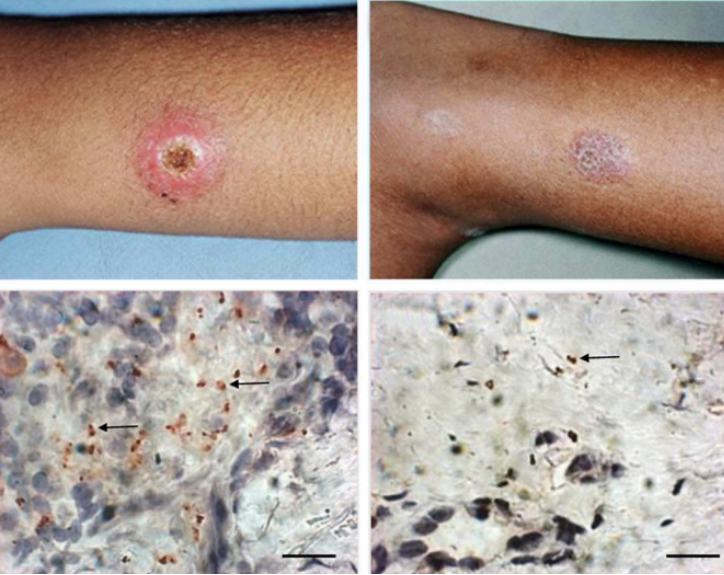
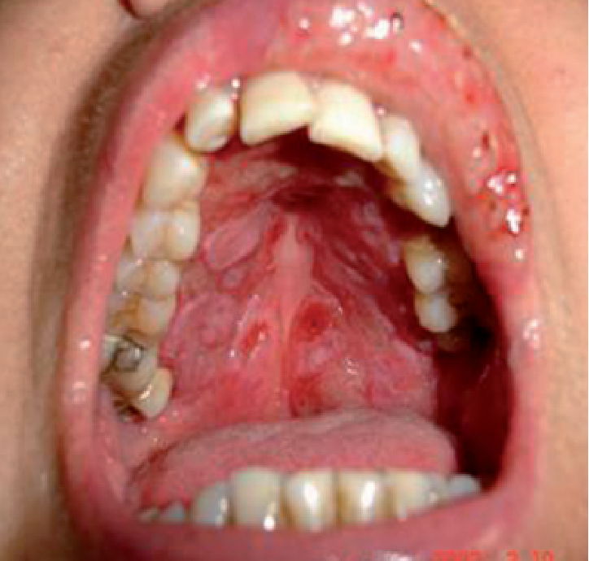

Aula 3
Principais reservatórios, as diferentes espécies de Leishmania e sua distribuição geográfica
A leishmaniose é um conjunto de doenças causadas por protozoários do gênero Leishmania, transmitidos exclusivamente por flebotomíneos. O ciclo de transmissão envolve vetores, reservatórios e hospedeiros acidentais. Globalmente, a doença ocorre em 99 países e é endêmica em 89 deles para a forma cutânea e 80 para a forma visceral. No Brasil, a leishmaniose representa um grande desafio para a saúde pública, sendo responsável pela maior carga da doença nas Américas, com 85% dos casos de leishmaniose cutânea (LC) e 92% dos casos de leishmaniose visceral (LV) na região.
Nesta aula, exploraremos as diferenças entre as formas clínicas das leishmanioses, analisando seus agentes etiológicos, vetores e reservatórios. Abordaremos os principais reservatórios da Leishmania, destacando sua importância no ciclo epidemiológico, bem como a distribuição geográfica das diferentes espécies do parasito. Além disso, discutiremos os fatores socioambientais que influenciam a transmissão da doença, considerando elementos como desmatamento, mudanças climáticas e urbanização.
Compreender esses aspectos é essencial para a formulação de estratégias de controle e prevenção da leishmaniose, garantindo ações mais eficazes no combate à doença.
OBJETIVOS:
Ao final desta aula, esperamos que você seja capaz de:
- Identificar e conhecer as espécies silvestres envolvidas no ciclo biológico das diferentes Leishmanioses;
- Reconhecer os principais reservatórios, as diferentes espécies de Leishmania e sua distribuição geográfica no Brasil e no mundo.
Introdução
Estima-se que 30.000 novos casos de LV e mais de 1 milhão de novos casos de LC ocorram anualmente. Considerando os países das Américas, o Brasil está entre os países que reportam 85% dos casos de LC, junto com a Colômbia e o Peru. No contexto da LV, o Brasil reporta 92% dos casos de LV das Américas.
Existem três formas principais da doença: leishmaniose visceral (LV), leishmaniose cutânea (LC) e leishmaniose mucosa ou mucocutânea (LM). Serão introduzidos neste tópico as principais diferenças entre elas, suas formas clínicas e os agentes etiológicos mais comumente associados. No tópico a seguir, veremos as características de cada uma delas.
- Doença parasitária causada por protozoários do gênero Leishmania.
- Transmissão: ocorre pela picada de fêmeas de flebotomíneos infectadas (mosquito-palha).
- Ciclo de transmissão: envolve o vetor, mamíferos reservatórios e o ser humano, que é um hospedeiro acidental.
O que é a Leishmaniose?
- 99 países na Europa, África, Ásia e América.
- 1 bilhão de pessoas em risco em áreas endêmicas.
- Casos anuais:
- - Leishmaniose visceral (LV): 30.000 novos casos.
- - Leishmaniose cutânea (LC): mais de 1 milhão de novos casos.
- Brasil:
- - 85% dos casos de LC nas Américas.
- - 92% dos casos de LV nas Américas.
Países afetados:
- Leishmaniose Visceral (LV): Afeta órgãos internos como fígado, baço e medula óssea.
- Leishmaniose Cutânea (LC): Causa lesões ulceradas ou nódulos na pele.
- Leishmaniose Mucosa (LM): Compromete as mucosas do nariz, boca e garganta, podendo causar deformidades.
Principais formas da doença:
Diferenciação entre as formas clínicas das leishmanioses
Existem 3 formas principais de leishmaniose: visceral (a forma mais grave, pois, na ausência de tratamento, pode ser fatal), cutânea (a mais comum, geralmente causando úlceras na pele) e mucosa ou mucocutânea (afetando as mucosas da boca, nariz e/ou garganta).
• Leishmaniose Visceral (LV)
A LV, também conhecida como calazar, é fatal em mais de 95% dos casos se não tratada. Afeta órgãos internos como o fígado, o baço e a medula óssea. Manifesta-se com sintomas sistêmicos, como febre, perda de peso, anemia, esplenomegalia (aumento do baço) e hepatomegalia (aumento do fígado). A maioria dos casos ocorre no Brasil, leste da África e Índia. A LV tem potencial de surtos e alta mortalidade. A demora no diagnóstico da LV está diretamente relacionada ao agravamento da doença.
A infecção Leishmania-HIV é bastante relevante na leishmaniose visceral. Pessoas vivendo com HIV e infectadas com Leishmania spp., principalmente as associadas com a LV, têm alta probabilidade de desenvolver a doença em sua forma completa, com altas taxas de recidiva e mortalidade. O tratamento antirretroviral reduz o desenvolvimento da doença, atrasa as recidivas e aumenta a sobrevida. A coinfecção Leishmania-HIV já foi reportada em 45 países. Altas taxas de coinfecção são relatadas no Brasil, Etiópia e no estado de Bihar, na Índia. No entanto, a maioria das pessoas que se infecta com o parasita não desenvolverá nenhum sintoma ao longo da vida. Portanto, o termo leishmaniose se refere à condição de adoecer devido a uma infecção por Leishmania spp., e não ao fato de estar infectado com o parasita. Apenas uma pequena fração das pessoas infectadas pelos parasitas que causam leishmaniose eventualmente desenvolverá a doença, a maioria conseguirá resolver a infecção sem apresentar sintomas e alguns permanecerão infectados, mas assintomáticos.
• Leishmaniose cutânea (LC)
A leishmaniose cutânea (LC) é a forma mais comum e causa lesões cutâneas, que podem se apresentar como úlceras, nódulos ou placas eritematosas, características que podem ser similares a outras doenças dermatológicas, como dermatite, infecções fúngicas, sífilis, tuberculose cutânea, e até mesmo alguns tipos de câncer de pele. Essa semelhança clínica pode levar a diagnósticos incorretos, atrasos no tratamento e, consequentemente, à progressão da doença. Essas lesões podem deixar cicatrizes permanentes e causar algum tipo de incapacidade séria ou estigma. Cerca de 95% dos casos de LC ocorrem nas Américas, na bacia do Mediterrâneo, no Oriente Médio e na Ásia Central. Estima-se que 600.000 a 1 milhão de novos casos ocorram anualmente no mundo, mas apenas cerca de 200.000 são reportados à OMS.
Lesões de LC

• Leishmaniose mucosa ou mucocutânea (LM)
A LM é uma forma debilitante da infecção que pode causar destruição dos tecidos mucosos, principalmente da mucosa nasofaríngea, levando a deformidades significativas e comprometendo a qualidade de vida do paciente. Essa complicação está frequentemente associada a um diagnóstico tardio da leishmaniose cutânea. Mais de 90% dos casos de leishmaniose mucocutânea ocorrem na Bolívia, Brasil, Etiópia e Peru. Em algumas regiões, como no Brasil, o termo leishmaniose tegumentar (LT) é utilizado para englobar tanto a leishmaniose cutânea quanto a leishmaniose mucosa.
Lesão de LM

Ciclo de transmissão dos agentes etiológicos das leishmanioses visceral e tegumentar
O ciclo de transmissão da leishmaniose se inicia quando fêmeas de flebotomíneos se alimentam de sangue de um reservatório ou hospedeiro vertebrado infectado. Estes insetos atuam como vetores biológicos, transmitindo os protozoários da Leishmania por meio da sua picada. O ciclo de transmissão depende diretamente das populações desses vetores, que são encontrados em áreas silvestres, rurais, periurbanas e urbanas, e se proliferam em locais úmidos e com matéria orgânica em decomposição. Existem inúmeras espécies de flebotomíneos incriminadas ou apontadas como vetores das diferentes espécies de Leishmania. Dentre os critérios importantes para definição de uma espécie de flebotomíneo como vetor de Leishmania spp está o hábito alimentar desses insetos, que favoreçam a transmissão, ou seja, ele precisa se alimentar de sangue dos hospedeiros vertebrados envolvidos no ciclo de transmissão da espécie de Leishmania em questão. Hábitos antropofílicos tornam uma espécie de flebotomíneo importante no ciclo de transmissão do parasito para o homem.
Os reservatórios naturais das diferentes espécies de Leishmania variam de acordo com a espécie de Leishmania. Muitos mamíferos são considerados reservatórios das espécies de Leishmania neotropicais, agentes etiológicos da leishmaniose cutânea, incluindo, entre outros, preguiças, tamanduás, tatus, antas, pacas, quatis, gambás e diversos roedores silvestres e sinantrópicos. Para a leishmaniose visceral, cães domésticos (Canis familiaris) são os principais reservatórios urbanos do agente etiológico, a Leishmania (Leishmania) infantum, enquanto animais silvestres, como raposas e marsupiais, também podem atuar como reservatórios em áreas florestais.
O ser humano, no ciclo das leishmanioses, é considerado um hospedeiro acidental, já que a Leishmania não depende dele para perpetuar o ciclo, embora em algumas regiões o ciclo antroponótico seja muito relevante. A infecção no homem acontece quando um inseto infectado pica o homem, inoculando formas promastigotas metacíclicas (as formas infectantes para os hospedeiros vertebrados) do parasita na pele. O parasita, então, é fagocitado pelos macrófagos, onde se transforma em amastigotas, que se multiplicam dentro dessas células.

Conclusão
Que bom que você chegou até aqui! Ao longo desta aula, exploramos os diferentes aspectos da leishmaniose, desde suas formas clínicas até os fatores que influenciam sua transmissão e os desafios no controle da doença. Como vimos, a leishmaniose é uma enfermidade complexa, que exige estratégias integradas para sua prevenção e manejo. A tabela abaixo resume as principais diferenças entre as formas clínicas da doença, destacando seus agentes etiológicos, vetores, reservatórios e impactos na saúde.
| Aspecto | Leishmaniose Visceral (LV) | Leishmaniose Cutânea (LC) | Leishmaniose Mucosa (LM) |
|---|---|---|---|
| Principais agentes etiológicos | L. infantum e L. donovani | L. (Viannia) braziliensis, L. mexicana e outras. | L. (Viannia) braziliensis |
| Forma clínica | Visceral (afeta órgãos internos) | Cutânea localizada, disseminada e difusa | Mucosa orofaríngea |
| Sintomas | Febre, anemia, aumento do fígado e baço | Lesões ulceradas, papulosas, acneiformes ou nodulares na pele | Destruição de mucosas nasais/orais |
| Transmissão | Picada de flebotomíneo infectado (Lutzomyia, Phlebotomus) | Picada de flebotomíneo infectado (Lutzomyia) | Picada de flebotomíneo infectado (Lutzomyia) |
| Principais reservatórios | Cães, raposas, outros mamíferos | Roedores, marsupiais, preguiças | Roedores, marsupiais, preguiças |
| Gravidade | Alta mortalidade se não tratada | Evolução clínica para LM | Destruição de tecidos e deformidades |
Compreender essas informações é essencial para desenvolver ações eficazes de combate à leishmaniose, seja no diagnóstico precoce, no controle de vetores ou na mobilização social para reduzir a incidência da doença.
Na próxima aula, que encerra este módulo, vamos aprofundar ainda mais nosso conhecimento sobre a distribuição geográfica das leishmanioses e os fatores socioambientais que influenciam sua ocorrência.
Continue acompanhando nosso curso e até a próxima aula!
• Exercício de fixação
Sobre a transmissão das leishmanioses, assinale a alternativa correta: